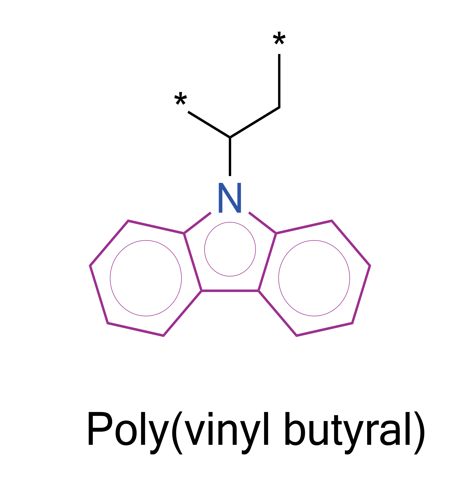

How To Guides¶
Featurization¶
Applying a single featurizer to a polymer¶
from polymetrix.featurizers.polymer import Polymer
from polymetrix.featurizers.chemical_featurizer import MolecularWeight
from polymetrix.featurizers.sidechain_backbone_featurizer import FullPolymerFeaturizer
# initialize the FullPolymerFeaturizer class with required featurizers
featurizer = FullPolymerFeaturizer(MolecularWeight()) # (1)
polymer = Polymer.from_psmiles('*CCCCCCNC(=O)c1ccc(C(=O)N*)c(Sc2ccccc2)c1') # (2)
result = featurizer.featurize(polymer)
polymetrixusesFeaturizerobjects similar tomatminerormofdscribe, which follows thesklearnAPI. TheFullPolymerFeaturizerclass is used to apply a featurizer to the entire polymer repeating unit.polymetrixis built around thePolymerclass, which is used to represent a polymer molecule. Thefrom_psmilesmethod is used to create a polymer molecule from a polymer SMILES string.
The result will be a NumPy array of MolecularWeight value for the given polymer.
Combining multiple featurizers for a polymer¶
from polymetrix.featurizers.polymer import Polymer
from polymetrix.featurizers.chemical_featurizer import MolecularWeight, NumHBondDonors, NumHBondAcceptors, NumRotatableBonds
from polymetrix.featurizers.sidechain_backbone_featurizer import FullPolymerFeaturizer
from polymetrix.featurizers.multiple_featurizer import MultipleFeaturizer
# initialize the FullPolymerFeaturizer class with required featurizers
mol_weight_featurizer = FullPolymerFeaturizer(MolecularWeight())
hbond_donors = FullPolymerFeaturizer(NumHBondDonors())
hbond_acceptors = FullPolymerFeaturizer(NumHBondAcceptors())
rotatable_bonds = FullPolymerFeaturizer(NumRotatableBonds())
featurizer = MultipleFeaturizer([mol_weight_featurizer, hbond_donors, hbond_acceptors, rotatable_bonds]) # (1)
polymer = Polymer.from_psmiles('*CCCCCCNC(=O)c1ccc(C(=O)N*)c(Sc2ccccc2)c1')
result = featurizer.featurize(polymer)
- The advantage of using
MultipleFeaturizeris that it allows you to combine multiple featurizers into a single featurizer object. This way, you can apply multiple featurizers to the polymer in a single step. TheMultipleFeaturizerbehaves like a "regular" featurizer, so you can use it in the same way as a single featurizer.
The result will be a NumPy array of mol_weight_featurizer, hbond_donors, hbond_acceptors, rotatable_bonds values for the given polymer.
Featurizers for the sidechain level of the polymer¶
The below image shows the difference between side chain and backbone of a polymer, Where the side chain is the part of the polymer that is not part of the main chain (highlighted in purple) and the backbone is the main chain of the polymer (highlighted in black). 
from polymetrix.featurizers.polymer import Polymer
from polymetrix.featurizers.multiple_featurizer import MultipleFeaturizer
from polymetrix.featurizers.chemical_featurizer import NumAtoms
from polymetrix.featurizers.sidechain_backbone_featurizer import SideChainFeaturizer, NumSideChainFeaturizer
# initialize the SideChainFeaturizer class with required featurizers
num_sidechains = NumSideChainFeaturizer()
sidechain_length = SideChainFeaturizer(NumAtoms(agg=["sum", "mean", "max", "min"]))
featurizer = MultipleFeaturizer([num_sidechains, sidechain_length])
polymer = Polymer.from_psmiles('*CCCCCCCCOc1ccc(C(c2ccc(O*)cc2)(C(F)(F)F)C(F)(F)F)cc1')
result = featurizer.featurize(polymer)
The result will be a NumPy array of num_sidechains and sidechain_length values for the given polymer.
Featurizers for the backbone level of the polymer¶
from polymetrix.featurizers.polymer import Polymer
from polymetrix.featurizers.multiple_featurizer import MultipleFeaturizer
from polymetrix.featurizers.chemical_featurizer import NumAtoms
from polymetrix.featurizers.sidechain_backbone_featurizer import SideChainFeaturizer, NumSideChainFeaturizer, BackBoneFeaturizer, NumBackBoneFeaturizer
# initialize the BackBoneFeaturizer class with required featurizers
num_backbones = NumBackBoneFeaturizer()
backbone_length = BackBoneFeaturizer(NumAtoms(agg=["sum"])) # Polymer cannot have more than one backbone
featurizer = MultipleFeaturizer([num_backbones, backbone_length])
polymer = Polymer.from_psmiles('*CCCCCCCCOc1ccc(C(c2ccc(O*)cc2)(C(F)(F)F)C(F)(F)F)cc1')
result = featurizer.featurize(polymer)
The result will be a NumPy array of num_backbones and backbone_length values for the given polymer.
Applying featurizers to a molecule¶
from polymetrix.featurizers.molecule import Molecule, FullMolecularFeaturizer
from polymetrix.featurizers.chemical_featurizer import MolecularWeight
# initialize the FullMolecularFeaturizer class with required featurizers
featurizer = FullMolecularFeaturizer(MolecularWeight())
molecule = Molecule.from_smiles('CC(=O)OC1=CC=CC=C1C(=O)O') # (1)
result = featurizer.featurize(molecule)
The result will be a NumPy array of MolecularWeight value for the given molecule.
Applying multiple featurizers to a molecule¶
from polymetrix.featurizers.molecule import Molecule, FullMolecularFeaturizer
from polymetrix.featurizers.multiple_featurizer import MultipleFeaturizer
from polymetrix.featurizers.chemical_featurizer import (
MolecularWeight,
NumHBondDonors,
NumHBondAcceptors,
NumRotatableBonds
)
# initialize the FullMolecularFeaturizer class with required featurizers
mol_weight_featurizer = FullMolecularFeaturizer(MolecularWeight())
hbond_donors = FullMolecularFeaturizer(NumHBondDonors())
hbond_acceptors = FullMolecularFeaturizer(NumHBondAcceptors())
rotatable_bonds = FullMolecularFeaturizer(NumRotatableBonds())
featurizer = MultipleFeaturizer([mol_weight_featurizer, hbond_donors, hbond_acceptors, rotatable_bonds]) # (1)
molecule = Molecule.from_smiles('CC(=O)OC1=CC=CC=C1C(=O)O') # (2)
result = featurizer.featurize(molecule)
The result will be a NumPy array of mol_weight_featurizer, hbond_donors, hbond_acceptors, rotatable_bonds values for the given molecule.
Comparator¶
Comparing a polymer with a molecule given a featurizer¶
from polymetrix.featurizers.polymer import Polymer
from polymetrix.featurizers.molecule import Molecule, FullMolecularFeaturizer
from polymetrix.featurizers.chemical_featurizer import MolecularWeight, NumHBondDonors, NumHBondAcceptors, NumRotatableBonds
from polymetrix.featurizers.sidechain_backbone_featurizer import FullPolymerFeaturizer
from polymetrix.featurizers.comparator import PolymerMoleculeComparator
# initialize with required featurizers
polymer_featurizer = FullPolymerFeaturizer(MolecularWeight())
molecule_featurizer = FullMolecularFeaturizer(MolecularWeight())
polymer = Polymer.from_psmiles('*CCCCCCNC(=O)c1ccc(C(=O)N*)c(Sc2ccccc2)c1')
molecule = Molecule.from_smiles('CC(=O)OC1=CC=CC=C1C(=O)O')
comparator = PolymerMoleculeComparator(polymer_featurizer, molecule_featurizer) # (1)
difference = comparator.compare(polymer, molecule) # (2)
The PolymerMoleculeComparator class is used to compare a polymer with a molecule given a featurizer. The compare method returns the difference between the polymer and the molecule in terms of the features extracted by the featurizers.
Comparing a polymer with a molecule given multiple featurizers¶
from polymetrix.featurizers.polymer import Polymer
from polymetrix.featurizers.molecule import Molecule, FullMolecularFeaturizer
from polymetrix.featurizers.chemical_featurizer import MolecularWeight, NumHBondDonors, NumHBondAcceptors, NumRotatableBonds
from polymetrix.featurizers.sidechain_backbone_featurizer import FullPolymerFeaturizer
from polymetrix.featurizers.multiple_featurizer import MultipleFeaturizer
from polymetrix.featurizers.comparator import PolymerMoleculeComparator
# initialize with required featurizers
polymer_featurizers = [
FullPolymerFeaturizer(MolecularWeight()),
FullPolymerFeaturizer(NumHBondDonors()),
FullPolymerFeaturizer(NumHBondAcceptors()),
FullPolymerFeaturizer(NumRotatableBonds())
]
molecule_featurizers = [
FullMolecularFeaturizer(MolecularWeight()),
FullMolecularFeaturizer(NumHBondDonors()),
FullMolecularFeaturizer(NumHBondAcceptors()),
FullMolecularFeaturizer(NumRotatableBonds())
]
polymer = Polymer.from_psmiles('*CCCCCCNC(=O)c1ccc(C(=O)N*)c(Sc2ccccc2)c1')
molecule = Molecule.from_smiles('CC(=O)OC1=CC=CC=C1C(=O)O')
polymer_featurizer = MultipleFeaturizer(polymer_featurizers) # (1)
molecule_featurizer = MultipleFeaturizer(molecule_featurizers) # (2)
comparator = PolymerMoleculeComparator(
polymer_multi,
molecule_multi,
comparisons=["absolute_difference", "signed_difference", "product", "squared_distance", "euclidean_distance"],
agg=["mean", "max", "min", "sum"]
) # (3)
difference = comparator.compare(polymer, molecule) # (4)
The MultipleFeaturizer class is used to combine multiple featurizers into a single featurizer object. The PolymerMoleculeComparator class is then used to compare the polymer and molecule using the combined featurizers. The compare method returns the difference between the polymer and the molecule in terms of the features extracted by the featurizers.
Adding terminal groups to polymers (sidechain, backbone and full polymer)¶
When working with polymers, you may want to add terminal groups to the polymer backbone or sidechains. This can be done by specifying the terminal groups in the terminal_groups attribute of the Polymer class.
from polymetrix.featurizers.polymer import Polymer
from polymetrix.featurizers.sidechain_backbone_featurizer import NumBackBoneFeaturizer, BackBoneFeaturizer, MultipleFeaturizer, FullPolymerFeaturizer
from polymetrix.featurizers.chemical_featurizer import NumRings, NumAtoms, TopologicalSurfaceArea
polymer = Polymer.from_psmiles("[*]=C(C#N)NC(=O)c1ccc(C(=O)NC(=[*])C#N)cc1")
# Add terminal groups for the sidechain and backbone
polymer.backbone_terminal_groups = {"[*]": "*O"}
polymer.sidechain_terminal_groups = {"[*]": "*CCO"}
# Featurizers for the backbone and sidechain with terminal groups
backbone_featurizers = [
NumBackBoneFeaturizer(),
BackBoneFeaturizer(NumRings()),
BackBoneFeaturizer(NumAtoms()),
BackBoneFeaturizer(TopologicalSurfaceArea()),
]
backbone_multi_featurizer = MultipleFeaturizer(backbone_featurizers)
features = backbone_multi_featurizer.featurize(polymer)
# Sidechain featurizers with terminal groups
sidechain_featurizers = [
NumSideChainFeaturizer(),
SideChainFeaturizer(NumAtoms()),
SideChainFeaturizer(NumHBondDonors()),
SideChainFeaturizer(TopologicalSurfaceArea()),
]
sidechain_multi_featurizer = MultipleFeaturizer(sidechain_featurizers)
features = sidechain_multi_featurizer.featurize(polymer)
# Full polymer featurizers with terminal groups
full_polymer_featurizers = [
FullPolymerFeaturizer(NumAtoms()),
FullPolymerFeaturizer(NumHBondDonors()),
FullPolymerFeaturizer(TopologicalSurfaceArea()),
]
full_multi_featurizer = MultipleFeaturizer(full_polymer_featurizers)
features = full_multi_featurizer.featurize(polymer)
The above code demonstrates how to add terminal groups to the polymer backbone and sidechains, and how to apply featurizers to the polymer with these terminal groups. The backbone_terminal_groups and sidechain_terminal_groups attributes are used to specify the terminal groups for the backbone and sidechains, respectively. The featurizers are then applied to the polymer with the terminal groups included.
Datasets¶
Loading datasets¶
Additionally, you can load the curated dataset for glass transition temperature (Tg) data for the polymers using this package.
# Import necessary modules
from polymetrix.datasets import CuratedGlassTempDataset
# Load the dataset
dataset = CuratedGlassTempDataset()
The dataset will be a class object that contains the data for the curated dataset for glass transition temperature (Tg) data for the polymers along with chemical and topological featurizers for the polymers.
Obtaining features and labels from the dataset¶
from polymetrix.datasets import CuratedGlassTempDataset
dataset = CuratedGlassTempDataset()
features = dataset.get_features(idx=range(len(dataset))
target = dataset.get_labels(idx=range(len(dataset)))
This will output the array of features and labels for the dataset, Which can be used for training/testing the model.
Obtaining a subset of the dataset¶
from polymetrix.datasets import CuratedGlassTempDataset
dataset = CuratedGlassTempDataset()
features = dataset.get_features(idx=[0, 1, 2, 3, 4, 5, 6, 7, 8, 9])
target = dataset.get_labels(idx=[0, 1, 2, 3, 4, 5, 6, 7, 8, 9])
This will output the array of features and labels for the first 10 data points in the dataset, Which can be used for training/testing the model.